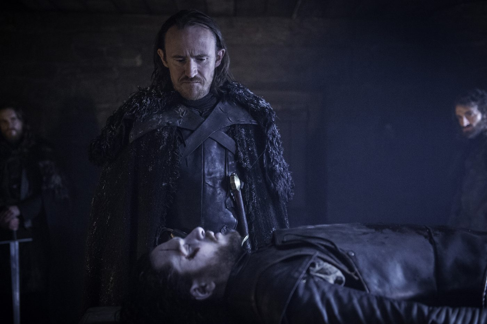
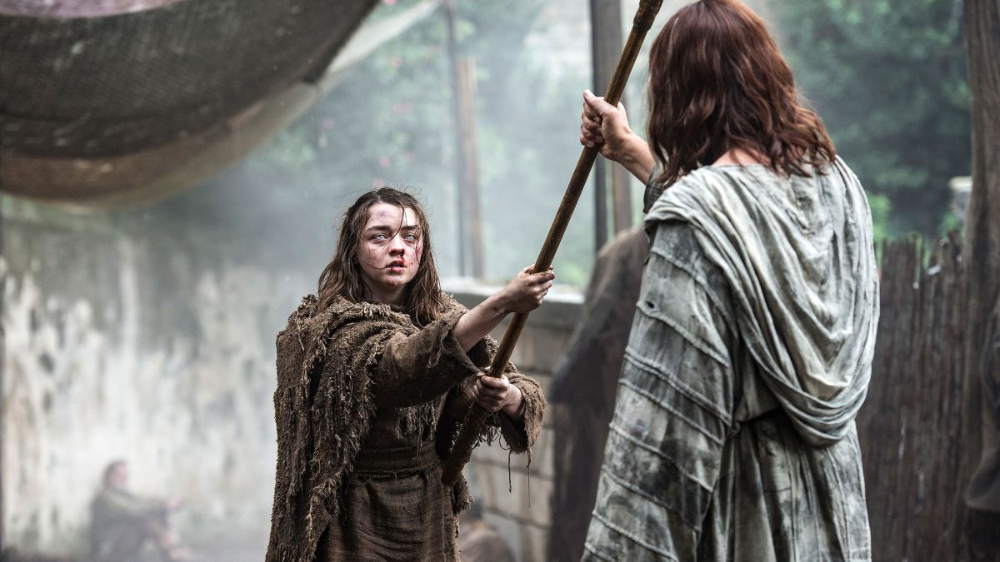
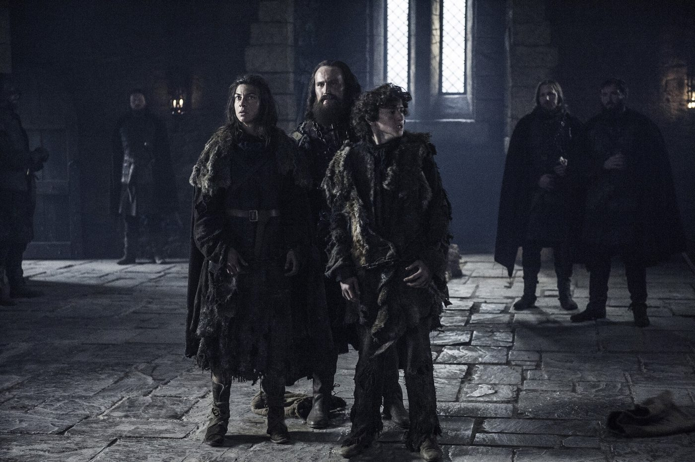
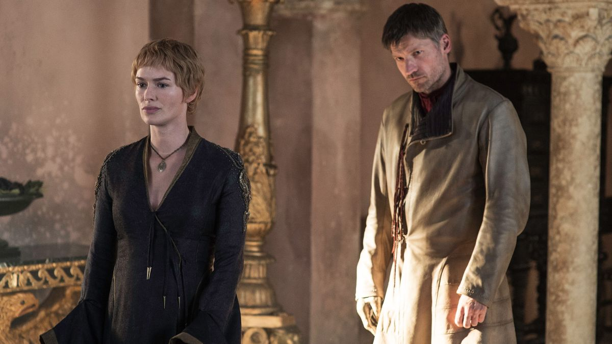
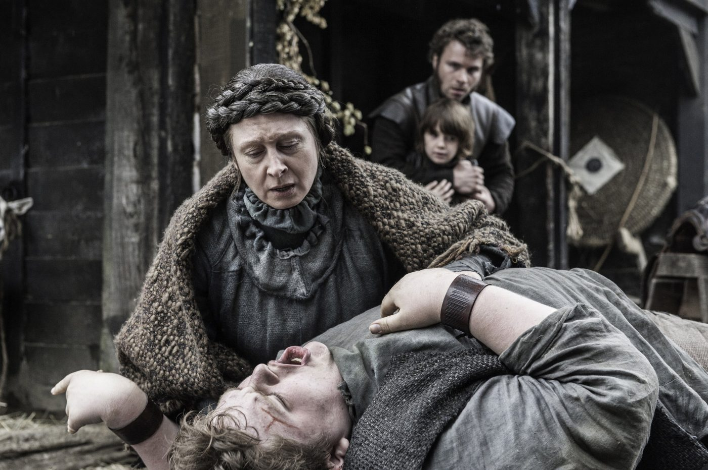
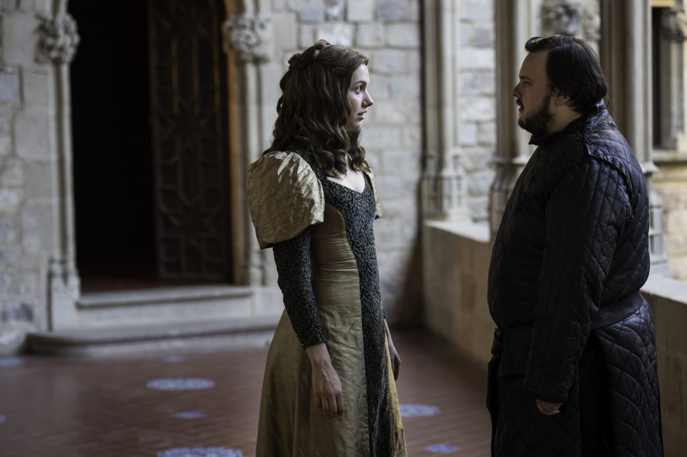
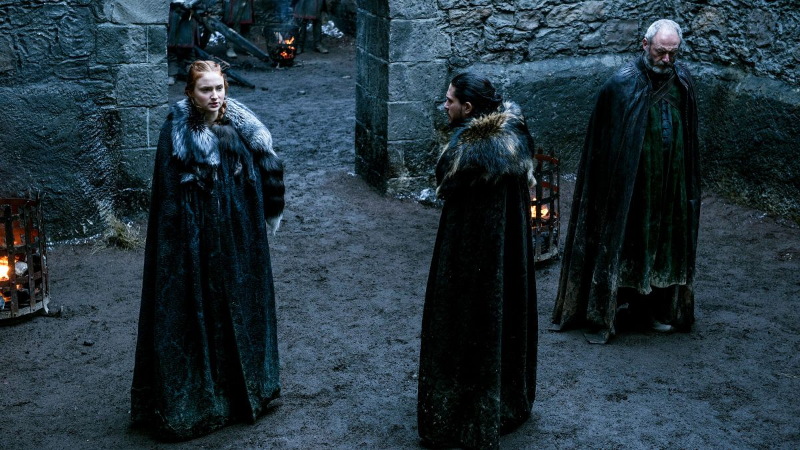
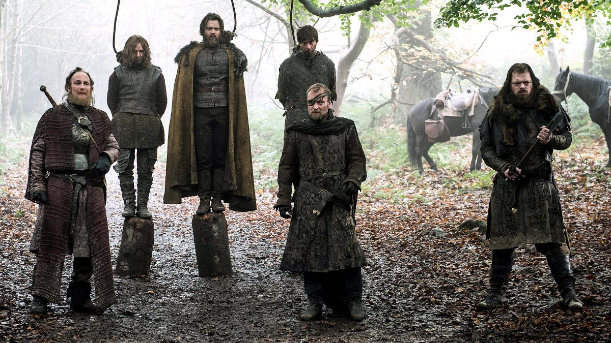
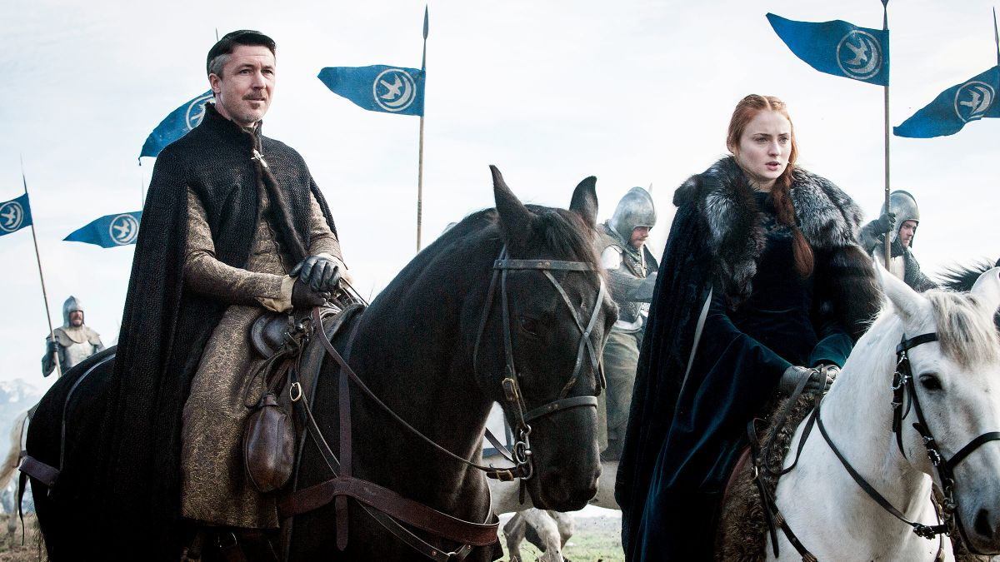
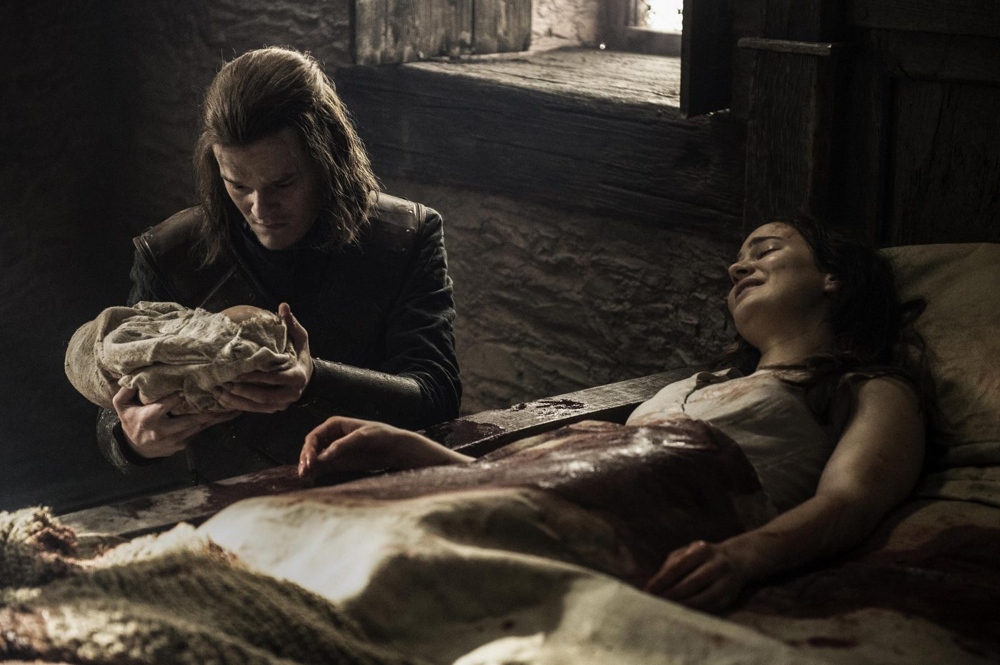

Sinopse: Jon Snow está morto. Sansa e Theon fogem de Winterfell. Daenerys encontra-se com Khal Moro. As Serpentes da Areia conspiram contra Doran Martell e sua linhagem. Davos Seaworth se rebela contra a Patrulha.

Sinopse: Bran treina com o Corvo de Três Olhos. Em Porto Real, Jaime aconselha Tommen. Tyrion exige boas notícias, mas terá que fazê-las por si mesmo. Em Castelo Negro, a Patrulha da Noite apoia Thorne. Ramsay Bolton propõe um plano, e Balon Greyjoy cogita outras propostas.

Sinopse: Daenerys se depara com o futuro, e Bran, com o passado. Tommen enfrenta o Alto Pardal. Arya treina para se tornar Ninguém. Varys encontra uma resposta. Ramsay recebe um presente.

Sinopse: Tyrion sela um acordo. Jorah e Daario realizam uma tarefa difícil. Jaime e Cersei tentam melhorar sua situação.

Sinopse: Tyrion procura um aliado estranho. Bran descobre algo importante. Brienne sai em uma missão. Arya ganha uma chance de provar a si mesma.

Sinopse: Um velho inimigo está de volta. Gilly se reúne a família de Sam. Arya enfrenta uma escolha difícil. Jaime enfrenta o Alto Pardal.

:Sinopse: Um guerreiro está de volta. Margaery convence Olenna Tyrell a voltar para Jardim de Cima. Sansa e Jon procuram aliados. Jaime confronta Peixe Negro. Theon navega em direção à Baía dos Escravos. Arya cogita voltar para casa.

Sinopse: Cersei escolhe a violência. Brienne e Jaime se reencontram. Os planos de Tyrion começam a dar frutos. Arya enfrenta um novo teste.

Sinopse: Termos de rendição são rejeitados e aceitos.

Sinopse: Cersei enfrenta seu julgamento.
